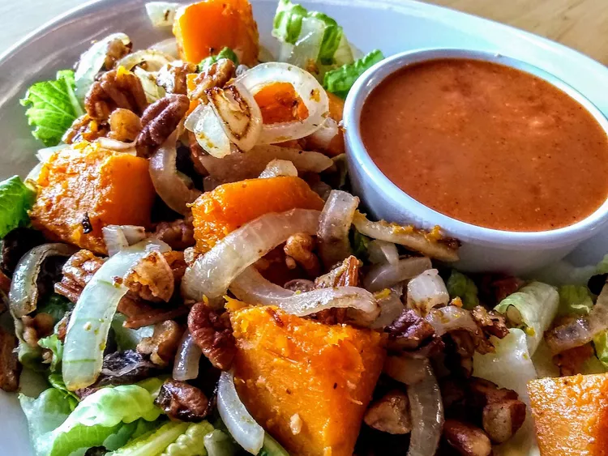

Roasted Butternut Squash Salad

This butternut squash salad with raisins, onions, crispy bacon, and romaine lettuce is served warm. Simple and delicious!
This salad screams fall and is absolutely delicious! Instead of drizzling it with just plain maple syrup, I made 'maple vinegarette' from this site and it was amazing!
I scaled this salad down to 1 person for my lunch today. The immediate flavor was sweet & salty. Then I got the crunch from the lettuce, nuts, and crispy bacon.
Ingredients:
- 1 medium butternut squash, halved lengthwise and seeded
- 1 tablespoon olive oil, or as needed
- 6 slices bacon
- 1 cup sliced onion
- 8 cups chopped romaine lettuce
- ⅓ cup pecans, toasted and chopped
- ⅓ cup raisins
- 2 tablespoons maple syrup, or to taste
Steps:
- Preheat the oven to 450 degrees F (230 degrees C).
- Brush cut sides of butternut squash with olive oil. Wrap each squash half tightly in aluminum foil.
- Roast squash halves in the preheated oven until they begin to soften, about 20 minutes. Remove squash from the oven and let sit until cool enough to handle. Remove foil and slice into 3/4-inch thick slices. Remove skin from each slice and cut into 3/4-inch cubes. Set aside 8 cups of the cubed squash, reserving any remaining squash for another use.
- Place bacon in a large skillet and cook over medium-high heat, turning occasionally, until crispy, 10 to 12 minutes. Remove bacon and drain on paper towels. Add onions to the skillet and cook in the bacon grease for 2 to 3 minutes. Add 8 cups squash and cook, tossing occasionally, until onions are soft and beginning to caramelize, and squash cubes are tender, 10 to 15 minutes.
- Place romaine lettuce in a large serving bowl; crumble bacon on top and add pecans and raisins. Add butternut squash-onion mixture; toss to combine. Drizzle with maple syrup and serve warm.